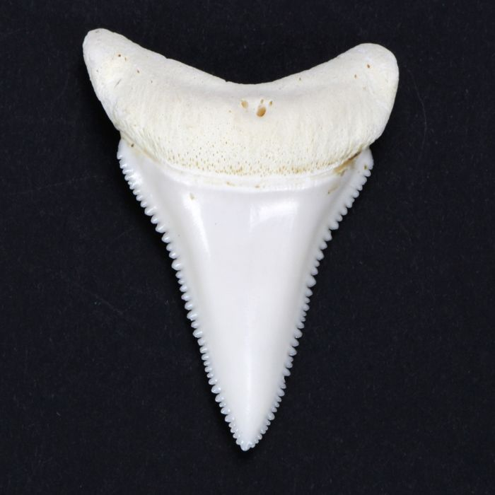
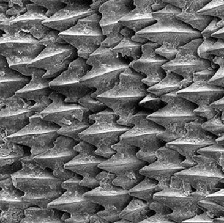
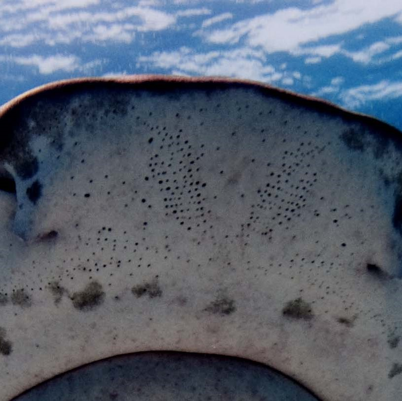
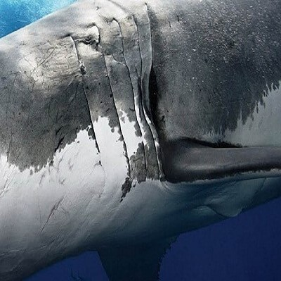
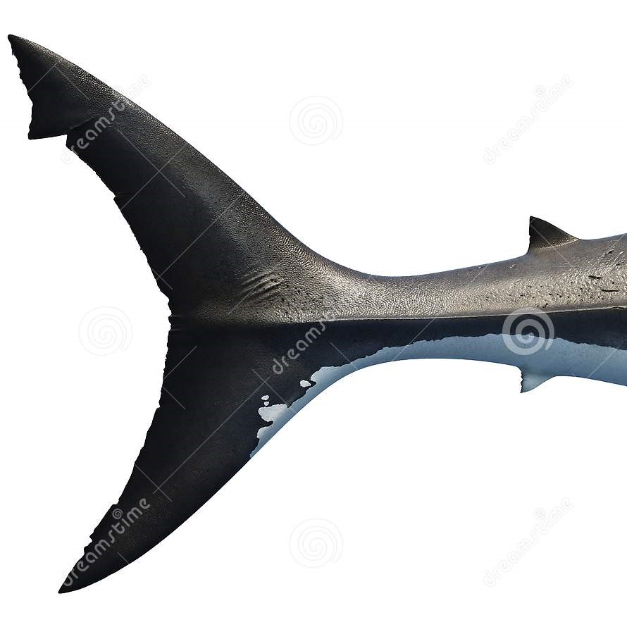
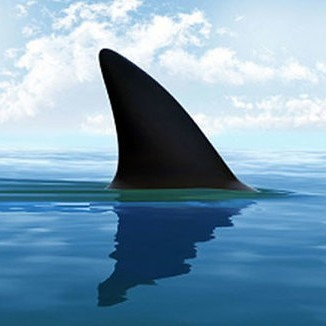

El tiburón blanco nunca tiene que preocuparse por perder dientes, por mucho que envejezca. Como todos los tiburones, pierde dientes de manera continua y aparecen otros nuevos en su lugar. Los dientes nuevos salen de dentro de las mandibulas como si se tratará de una fabrica, a medida que se caen los dientes viejos y gastados. Los tiburones han existido por mucho tiempo, los primeros que se conocen evolucionaron hace unos 400 millones de años, más de 200 millones de años antes que los dinosaurios. Más de 2.000 especies han sido identificadas a partir de los archivos fósiles, comparadas con las casi 1.000 que sabemos que existen hoy en día.
Sus aletas eran menos flexibles y maniobrables y, posiblemente, los tiburones de la antigüedad eran menos ágiles que sus primos modernos. Pero en algunas cosas eran muy similares a los animales a los hoy llamamos tiburones, con el mismo esqueleto cartilaginoso, múltiples hendiduras branquiales y dientes reemplazables. Los tiburones son los únicos peces que no tienen depredadores en el mar, esto los hace los reyes de los mares. Armados con una serie de adaptaciones evolutivas, los hacen las más eficaces máquinas de matar, ya que poseen varias hileras de dientes afilados, sistemas sensoriales especializados, agudos sentidos del olfato y oído, poseen la capacidad de viajar grandes distancias y detectan presas aún cuando éstas poseen camuflajes.
Tiburón Blanco tambien conocido como Carcharodon Carcharias vive en los oceanos calidos mide hasta 7,2 metros de largo y come peces, focas y cetáceos este pez vive hasto los 70 años en la naturaleza, bien cuidado artificialmente ha llegado a vivir 90 años de edad, puede nadar hasta a 56 kilometros por hora. Este tiene un increible olfato, cuando esta hambriento puede sacar su cabeza del agua para oler sus presas otra estrategia de ataque es hacerce lo inofensivos y cuando su presa se descuida el la parte por la mitad (se la come) las partes de un tiburón blanco son:
| Dientes | Dentículos Dermicos | Supersensores | Hendiduras Branquiales | Cola Veloz | Primera Aleta Dorsal |
|---|---|---|---|---|---|
| Cada Diente es como una hoja de sierra, como una cuchilla dentada, capaz de cortar piel, carne o hueso. Los tiburones blancos jóvenes tienen dientes más finos y puntiagudos para atrapar peces escurridizos, y con el tiempo cada vez son más triangulares. | La piel de tiburón esta cubierta por dentículos dérmicos que se solapan: son escamas duras y rugosas hecha del mismo material que sus dientes. Protegen su piel y reduce el rose con el agua. De esta manera el tiburón puede nadar con mayor sigilo, rapidez y eficiencia y sorprender a sus victimas. | Los pequeños poros del tiburón contienen las ampollas de Lorenzini, unos sensores que detectan las señales electricas minúsculas cercanas generadas por los musculos de otros animales, para que el tiburón pueda atacar las presas en la oscuridad. | Mientras el tiburón nada, le entre agua oxigenada por la boca, le cruza las branquias y sale por estas hendiduras. | La forma de media luna de su cola le da gran velocidad. La unión entre el cuerpo y la cola es muy estrecha, igual que en otros peces rápidos como los atunes, lo que les permite mover rápidamente la cola mientras el cuerpo se mantiene rigido. | La gran aleta dorsal estabiliza al tiburón cuando se lanza al ataque. |
|  |  |  |  |  |  |